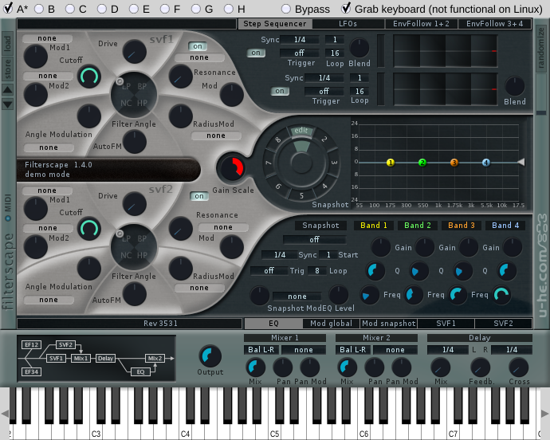
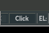
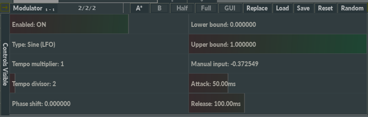
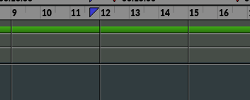
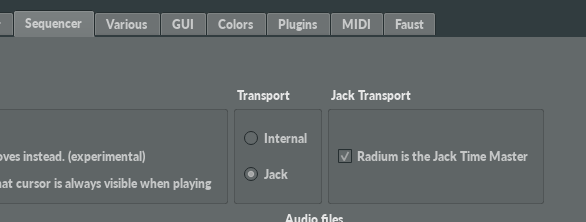
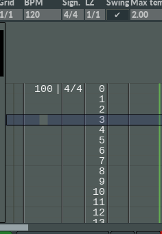
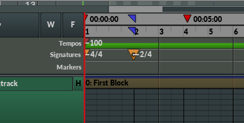
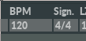
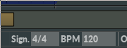

If the "Radium is the Jack Time Master" option is enabled under Edit -> Preferences -> Sequencer -> Jack Transport, Radium will send timing information to Jack Transport, meaning that other Jack Transport clients may use Radium's timing.
Note that Radium always uses it's own timing. Radium never asks Jack Transport for timing.
Here are some other common names for the term "signature": time signature, meter signature, meter, metre, measure, and measure signature.
Example 1: If tempo is set to 64 BPM, and the signature is set to 8/8, a new bar will be played every 16 seconds (64/4 * 8/8), and a new beat will be played every 2 seconds (64/4 * 1/8). Example 2: If the signature is set to 2/4, a new bar will be played every 8 seconds (64/4 * 2/4), and a new beat will be played every 4 seconds (64/4 * 1/4).
Editor timing is the default mode. In editor timing mode, tempos and signaturs are provided by the editor blocks placed in the first seqtrack.
Tempos are edited in the tempo tracks in the editor ("BPM"), and signatures are edited in the signature tracks in the editor ("Sign."):

In this mode, the tempo and signature lanes in the sequencer are just used for visualization, and editing in any of these two lanes is disabled.
In sequencer timing mode, tempos and signatures are provided by the tempo and signature lanes in the sequencer. This mode can be set explicitly in the popup menu of the sequencer, but it will also be used automatically if the first seqtrack is for audio and not for editor blocks
If you are using Radium mainly for recording and playing back audio files, this mode is both simpler, and probably easier to use, than editor timing.
Note that accelerando and ritardando are not supported yet in this mode. In addition, signatures must align with bars, and tempos must align with beats. Editor timing mode does not have these limitations.

If "BPM track" and "Signature track" are visible you can change the default timing values in the upper left part of the editor:

If "BPM track" and "Signature track" are not visible you can change the default timing values in the bottom bar instead:

You change whether "BPM track" and "Signature track" are visible by right clicking.